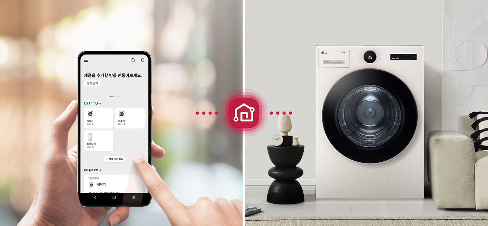

세상에 없던 6모션 건조의 시작 LG TROMM Objet collection 건조기 - 6모션 건조 : 건조 행동과 자연의 건조바람을 닮은 섬세한 건조 - 공간 인테리어 가전 : 감탄을 자아내는 감각적인 디자인 - 트루스팀 : 국내 최대 용량 100℃ 트루스팀
오브제컬렉션 & 미니멀 플랫 디자인
공간에 감각을
더하는 디자인
우아하고 세련된 바디는 어떤 공간에서든
우월한 존재감을 드러냅니다.
맞춤 제작한
가구처럼 주변과도 조화롭게 어우러집니다.
두 가지 컬러를 취향에 맞게 선택해 보세요.
우월한 존재감을 드러냅니다.
맞춤 제작한
가구처럼 주변과도 조화롭게 어우러집니다.
두 가지 컬러를 취향에 맞게 선택해 보세요.
-
[6모션]
6모션이란? 직접 빨래를 말리는 동작과 자연 바람의 움직임을 본뜬 6가지 건조 모션으로 건조코스별 최적화된 효율을 위해 코스별 모션은 다르게 적용됩니다.
수축완화 코스
아끼는 옷을 위한
특별한 움직임
6모션 건조
건조기 최초로 탑재한 6모션으로
옷감의 낙차로 인한 자극을 줄여주고
적정 온도와 건조도까지 제어하여
건조 시 발생하는 옷감의 수축을 완화합니다.
옷감의 낙차로 인한 자극을 줄여주고
적정 온도와 건조도까지 제어하여
건조 시 발생하는 옷감의 수축을 완화합니다.


일반건조 : 옷감 낙차로 인한 자극으로 큰 수축 발생↑ / 펴주기, 살랑이기, 널기 : [뉴트롬 건조기] 펴주기, 널기, 살랑이기 3개 모션으로 옷감 낙차를 줄여 수축 완화↓
-
[수축완화 코스]
* '수축완화' 코스는 옷감의 손상(수축)을 완화하기 위해 온도 / 적정 건조정도(건조 정도 - 약) / 6모션으로 최적화 한 코스입니다.
* 권장 의류는 일반적인 면 소재의 일상 의류이며 강하게 말리지 않아 일부 습감이 느껴질 수 있습니다.
[수축완화 코스 성능]
* 시험 기관 : 인터텍
* 시험 코스 : 수축완화코스 / 기존 조기(RH17VTS) 표준코스 (비교 제품)
* 시험 부하 : 3kg (반팔 면 티셔츠 (면 100%), 아동용 혼방 티셔츠 (폴리 84%, 면 16%), 바람막이 점퍼 (나일론 100%))
* 시험 방법 : KS K ISO3759 규격에 준해 시험 진행 함
* 시험 결과 : 반팔 면 티셔츠 : 수축율 평균 9% 개선 (소매길이/소매폭 세로길이 평균 14%, 몸통 세로길이/가로길이 평균 5% 개선), 아동용 혼방 티셔츠 : 수축율 평균 21% 개선 (소매길이/소매폭 세로길이 평균 14%, 몸통 세로길이/가로길이 평균 5% 개선), 바람막이 점퍼 : 수축율 평균 54% 개선 (소매길이/소매폭 세로길이 평균 63%, 몸통 세로길이/가로길이 평균 43% 개선)


인공지능 DD모터
기술의 차이가 만드는
기술의 차이가 만드는
건조의 차이
소음은 줄이고 건조는 더 섬세해졌습니다.
모터와 드럼통을 연결하던 벨트를 없애고
건조통 드럼의 움직임을
정교하게 조절해
6가지 동작의 6모션 건조가 가능해졌습니다.
모터와 드럼통을 연결하던 벨트를 없애고
건조통 드럼의 움직임을
정교하게 조절해
6가지 동작의 6모션 건조가 가능해졌습니다.
인공지능 건조 코스
의류인식기술로
세탁물의 특성에 따라
꼼꼼하고 빠르게 건조
세탁물의 무게, 재질, 습도를 감지해 건조 시간,
온도를 옷감에 맞춰 스스로 설정합니다.
잘 마르는 의류는 더 빠르게 건조하고,
잘 마르지 않는 두꺼운 의류는 더 꼼꼼하게 건조합니다.
온도를 옷감에 맞춰 스스로 설정합니다.
잘 마르는 의류는 더 빠르게 건조하고,
잘 마르지 않는 두꺼운 의류는 더 꼼꼼하게 건조합니다.
-
* 소비자의 이해를 돕기 위해 연출된 영상입니다.
[인공지능건조 코스 시간단축]
* 시험 기관 : 인터텍
* 시험 부하 : 실사용 의류 3kg (합성섬유 위주의 부드럽고 섬세한 의류)
* 시험 방법 : 자사가 제시한 조건에서 자사 기존 건조기(RH17VTS) 표준코스와 인공지능건조에서 건조시간 비교
* 시험 결과 : 자사 기존 건조기(RH17VTS) 표준코스 대비 건조시간 18% 감소
* 시험결과는 사용환경 등에 따라 차이가 있을 수 있습니다.
[인공지능건조 코스 균일건조]
* 시험 기관 : 인터텍
* 시험 부하 : 실사용 의류 3kg (면 섬유 위주의 두툼한 의류)
* 시험 방법 : 자사가 제시한 조건에서 자사 기존 건조기(RH17VTS) 표준코스와 인공지능건조에서 건조도 표준편차 비교
* 시험 결과 : 자사 기존 건조기(RH17VTS) 표준코스 대비 건조도 표준편차 38% 개선
* 시험결과는 사용환경 등에 따라 차이가 있을 수 있습니다.
조용조용 코스
언제 어디서나
건조도 조용하게
아이의 낮잠 시간이나 저녁 무렵 휴식을
방해받고 싶지 않을 땐 조용조용 코스가 제격입니다.
전보다 소음을 확 낮춰 사용 시간대와
공간 제약 없이 편하게 쓸 수 있습니다.
방해받고 싶지 않을 땐 조용조용 코스가 제격입니다.
전보다 소음을 확 낮춰 사용 시간대와
공간 제약 없이 편하게 쓸 수 있습니다.
-
* 소비자의 이해를 돕기 위해 연출된 영상입니다.
[조용조용 코스 소음]
* 시험 기관 : 인터텍
* 시험 부하 : 국제규격부하 3kg
* 시험 방법 : 소음측정 규격 ISO 3744 시험법에 준해 시험 진행하여 테스트 코스 동작 전체 소음 측정
* 시험 결과 : 표준코스 대비 소음 평균 3.3dB 감소
* 시험결과는 사용환경 등에 따라 차이가 있을 수 있습니다.
이지 서클 컨트롤Easy Circle Control
간편하게 돌리고
한눈에 보는 쉬운 건조
복잡한 조작부를 한 화면에 담아
조작은 쉽고 디자인은 훨씬 간결해졌습니다.
다이얼을 돌려 원하는 코스를 손쉽게 설정하고
건조 시간, 알림도 한눈에 확인할 수 있습니다.
조작은 쉽고 디자인은 훨씬 간결해졌습니다.
다이얼을 돌려 원하는 코스를 손쉽게 설정하고
건조 시간, 알림도 한눈에 확인할 수 있습니다.
스마트 페어링
세탁부터 건조까지
하나의 기기처럼
LG 트롬 세탁기를 함께 사용 중이시라면
진행 중인 세탁 정보가 그대로 공유됩니다.
덕분에 따로 설정 없이도 세탁 코스에 맞게
최적의 건조 코스를 곧바로 진행할 수 있습니다.
진행 중인 세탁 정보가 그대로 공유됩니다.
덕분에 따로 설정 없이도 세탁 코스에 맞게
최적의 건조 코스를 곧바로 진행할 수 있습니다.

-
* 스마트 페어링 기능은 Wi-Fi 연결 및 LG ThinQ 앱에 제품 등록 후 사용할 수 있으며, Wi-Fi를 지원하는 LG 세탁기(드럼/통돌이)와 모두 페어링 가능합니다.
* 스마트 페어링 기능(건조기)은 일부 모델에서만 지원됩니다.
트루스팀 스팀살균코스
살균은 기본!
살균은 기본!
냄새 제거부터
옷감 구김 완화까지
살균부터 의류 케어까지 트루스팀 하나로
깔끔하게 관리하세요.
99.99% 살균으로
옷감 깊숙이 밴 냄새 제거는 물론
구겨진 셔츠,
패딩의 볼륨감도 손쉽게 회복시킬 수 있습니다.
깔끔하게 관리하세요.
99.99% 살균으로
옷감 깊숙이 밴 냄새 제거는 물론
구겨진 셔츠,
패딩의 볼륨감도 손쉽게 회복시킬 수 있습니다.
-
* 인터텍(Intertek) 시험 결과, 자사가 제시한 기준으로 셔츠(면 65 %, 폴리 35 % 재질) 1벌, 3벌, 5벌 기준 스팀리프레쉬 코스 동작 전/후 구김 완화 확인 시 AATCC 평가판 기준, 초기 구김 대비 평균 2배 이상 완화 됨
* 한국의류시험연구원(KATRI) 시험 결과, KS K 0891 (의류관리기 시험 준용), 패딩리프레쉬코스(패딩 1벌), 스팀리프레쉬코스(셔츠 1벌), 침구털기코스(이불 1채), 기능성의류(운동복 2kg), 아웃도어리프레쉬(아웃도어제킷 1벌) 기준 스팀옵션 선택시 표준 직물의 15cm x 15cm 면적에 흡착시킨 냄새 농도를 비교하여 탈취 성능 평균 계산 시 4-에테닐 피리딘(담배) 99%, 이소발레릭 애시드(땀) 99% 제거함.
* 한국의류시험연구원(KATRI) 시험 결과, 국제 규격 시험 부하 6.4kg 스팀살균코스 기준. 유해세균(황색포도상구균, 녹농균, 폐렴간균) 99.99% 살균. 살균효과는 세균의 종류, 사용환경 등에 따라 차이가 있을 수 있습니다.
* Environmental Allergens INFO & CARE(일본소재) 시험결과, 자사가 제시한 기준으로 국제 규격 시험부하 6.4 kg 스팀살균코스 기준. 꽃가루 알러겐 (돼지풀, 벼과, 노송나무, 자작나무, 삼나무) 99.9% 이상 불활성화.
* 인터텍 시험 결과, 스팀살균코스에서 집먼지진드기 100% 사멸됨.
* 전남대학교 산학협력단 시험 결과, 면부하 1kg에 KS포 (면 100%) 3장에 접종한 후 스팀살균코스 행정 시 인플루엔자 A(H3N2), 인플루엔자 A(H1N1), 엔테로 바이러스(PEV), 헤르페스바이러스 (IBRV), 아데노바이러스(ICHV), 코로나[MHV], 코로나[PEDV] 99.99% 제거함.
* MHV, PEDV바이러스는 코로나 바이러스의 일종으로 신종 코로나바이러스 19(COVID-19)에 대한 시험 결과가 아님.
스팀 기능 선택이 가능한 코스는 표준, 셔츠, 타월, 아기옷, 기능성의류, 침구털기, 패딩리프레쉬, 아웃도어리프레쉬코스이며 스팀살균과 스팀리프레쉬는 스팀 기능이 기본으로 설정되는 코스입니다.
* 시험결과는 사용환경 등에 따라 차이가 있을 수 있습니다.
* 스팀 발생기내의 스팀 온도는 100℃이며, 제품 사용시 분사노즐을 통과한 스팀과 내부 의류의 온도는 낮아질 수 있습니다.
* 국내최다 : 2021년 12월 국내판매 전기식 건조기 홈페이지 시험치 명시 기준 (자사 16종=유해세균 3종+바이러스 7종+유해물질 6종)
대용량 20kg
스케일이 다른 크기
두껍고 부피가 큰 겨울 이불은 물론,
많이 쌓인 빨래도 20kg 대용량으로
가뿐하게 해결할 수 있습니다.
많이 쌓인 빨래도 20kg 대용량으로
가뿐하게 해결할 수 있습니다.

에어부스터+
대용량에 걸맞은
대용량에 걸맞은
강력한 바람
상하좌우 전 방향에서 강력하게
불어 나오는 바람이
대용량 20kg도
건조로 가뿐하게 건조합니다.
불어 나오는 바람이
대용량 20kg도
건조로 가뿐하게 건조합니다.
- * 소비자의 이해를 돕기 위해 연출된 영상입니다.
- * 소비자의 이해를 돕기 위해 연출된 영상입니다.
-
* 소비자의 이해를 돕기 위해 연출된 영상입니다.
[스팀통살균]
* 시험 기관 : 인터텍
* 시험 방법 : 유해세균 오염된 면직물 부착 또는 면봉을 사용하여 균 도포 하여 스팀 통살균 동작
* 시험 균 : 유해세균 4종 (황색포도상구균, 녹농균, 폐렴간균, 대장균)
* 시험 결과 : 필터 내부, 콘덴서 전면, 열교환기 전면, 드럼 후면, 팬, 드럼 내부, 드럼 리프터, 도어 내부, 열교환기 하단, 필터 하단, 열풍이동 시작점, 열풍이동 끝점 12포인트 확인결과 평균 99.9% 이상 살균
* 시험결과는 사용환경 등에 따라 차이가 있을 수 있습니다.
통살균 코스
통까지 살균하는
통까지 살균하는
건강한 관리
트루스팀의 강력한 살균으로
건조기 드럼 내부를
구석구석
건강하게 관리하세요.
건조기 드럼 내부를
구석구석
건강하게 관리하세요.
-
* 소비자의 이해를 돕기 위해 연출된 영상입니다.
[스팀통살균]
* 시험 기관 : 인터텍
* 시험 방법 : 유해세균 오염된 면직물 부착 또는 면봉을 사용하여 균 도포 하여 스팀 통살균 동작
* 시험 균 : 유해세균 4종 (황색포도상구균, 녹농균, 폐렴간균, 대장균)
* 시험 결과 : 필터 내부, 콘덴서 전면, 열교환기 전면, 드럼 후면, 팬, 드럼 내부, 드럼 리프터, 도어 내부, 열교환기 하단, 필터 하단, 열풍이동 시작점, 열풍이동 끝점 12포인트 확인결과 평균 99.9% 이상 살균
* 시험결과는 사용환경 등에 따라 차이가 있을 수 있습니다.
듀얼 인버터 컴프레서/모터
쓸수록 마음 놓이는
쓸수록 마음 놓이는
놀라운 에너지 절약
혁신적 기술로 탄생한 듀얼 인버터 컴프레서와
모터는
1등급 에너지 효율로 전기료 부담을 확
줄여줍니다.
또한 10년 무상보증으로 혹시 모를
상황에도 안심하고 대비할 수 있습니다.
모터는
1등급 에너지 효율로 전기료 부담을 확
줄여줍니다.
또한 10년 무상보증으로 혹시 모를
상황에도 안심하고 대비할 수 있습니다.
- * 건조기 에너지 소비효율 등급 규격기준에 따라 국제규격시험부하(IEC)로 표준코스(+자동모드+표준조건)에서만 시험한 결과임.(건조 코스/모드 및 사용조건에 따라 결과가 상이할 수 있음.)

- * 건조기 에너지 소비효율 등급 규격기준에 따라 국제규격시험부하(IEC)로 표준코스(+자동모드+표준조건)에서만 시험한 결과임.(건조 코스/모드 및 사용조건에 따라 결과가 상이할 수 있음.)
LG ThinQ
LG ThinQ로
언제 어디서든 자유롭게
LG ThinQ에 건조기를 등록하면
건조기에 없는 추가 코스 다운로드,
건조 종료와 물 비우기 등 각종 알림을
앱으로 받아볼 수 있으며 원격제어 기능으로
건조를 시작할 수 있습니다.
건조기에 없는 추가 코스 다운로드,
건조 종료와 물 비우기 등 각종 알림을
앱으로 받아볼 수 있으며 원격제어 기능으로
건조를 시작할 수 있습니다.


-
* 해당 기능 사용을 위해서는 스마트폰의 Google Play 스토어 또는 Apple App 스토어에서 'LG ThinQ' 앱을 설치하여 Wi-Fi에 연결해야 합니다. 자세한 사용 방법은 애플리케이션의 도움말을 참고해 주세요.
* LG ThinQ 앱은 일부 스마트폰에서는 기능 사용에 제약이 발생하거나 작동하지 않을 수 있으니, 최소 사양을 확인 후 사용하세요. (Android OS 7.0 이상, iOS 11.0 이상)